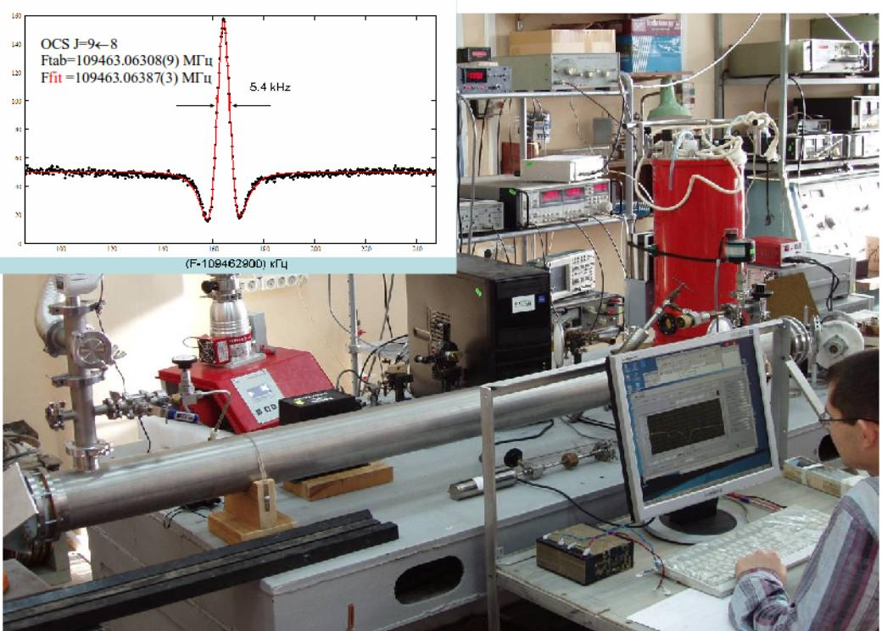

Instruments The Lamb-dip spectrometer The Lamb-dip spectrometer
The Lamb-dip spectrometer

Broadband cavity-less video spectrometer operating at mm-submm wave lengths has been put into operation in the year of 2012.
The spectrometer allows observation of narrow non-linear molecular absorption resonances (Lamb-dips)
having minimum width of about 5 kHz (FWHM) and measurements of their frequencies with the accuracy better than 1 kHz.
The spectrometer is destined for highly accurate investigation of intramolecular interactions by studies of
hyperfine structure of observed molecular transitions.

The spectrometer block-diagram
More details are presented in Ref. 8 (2012), Ref. 11 (2013) and Ref. 4 (2015).
Examples of spectra.
|